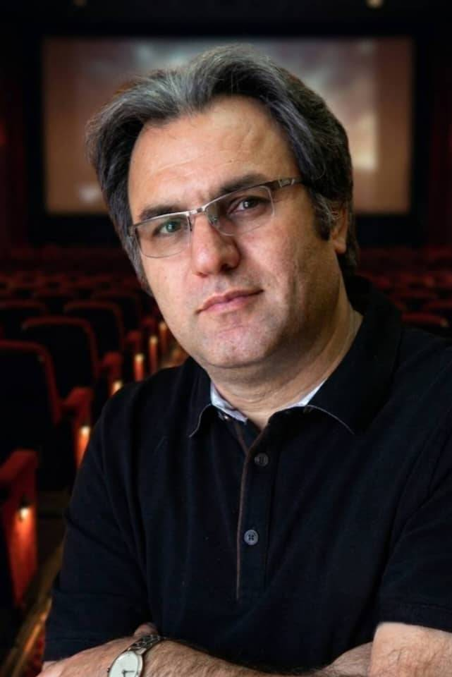

Exploring cinema, history, culture and human experience through visual storytelling.
Foroud Paknia is an Iranian filmmaker, screenwriter and researcher. His creative work focuses on feature films, documentary cinema, cultural narratives and the relationship between history, identity and human experience.
Feature film projects and screenplays.
Documentary projects exploring history, culture,heritage and human stories through cinematic storytelling.
Research projects focused on cinema studies,artificial intelligence, storytelling and the future of visual culture.
For professional inquiries, collaborations and film projects,please contact Foroud Paknia.
Feature film projects exploring human stories and cinematic narratives.
Stories of culture, history and collective memory.
Cinema studies and creative research in the age of new technologies.